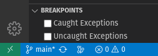

VSCode Debugger: Ignoring Exceptions In Your Dependencies
I spend a lot of my time at work debugging a web application server that runs on top of Node. Like most web application servers, it has robust exception handling to make sure that uncaught exceptions don't crash the server application.
While this is a solid engineering decision, it does make debugging the application a little more complicated. Sometimes exceptions are thrown that don't have stack traces or even descriptive names. That's the worst case scenario. I know an exception occurred, but I don't know what or where.
When debugging this in the VSCode debugger, you're given two options:

Checking "uncaught exceptions" isn't going to help here because all exceptions are caught, even if it's only at the point of the web application server's umbrella exception handler.
Checking "caught exceptions" will stop on every caught exception, which will eventually catch the exception you're looking for. However, it will also stop on all of the other exceptions that are thrown. I've noticed that my dependencies often throw a lot of exceptions that they catch. Hey, throwing and catching is just another method of control flow. Who am I to say my dependencies can't use it? But it does create a lot more noise when I'm trying to debug a problem in my own code.
Here's a debugger launch configuration that runs npm run start:server.
{
// Use IntelliSense to learn about possible attributes.
// Hover to view descriptions of existing attributes.
// For more information, visit: https://go.microsoft.com/fwlink/?linkid=830387
"version": "0.2.0",
"configurations": [
{
"type": "node",
"request": "launch",
"name": "Start Server",
"runtimeExecutable": "npm",
"runtimeArgs": ["run", "start:server"],
"console": "integratedTerminal",
"skipFiles": ["<node_internals>/**", "**/node_modules/**"],
"internalConsoleOptions": "neverOpen"
}
]
}
The crucial addition here is in the skipFiles array. The "<node_internals>/**" element is there by default in VSCode. I've added the "**/node_modules/**" element for the same reason the default entry is present. I'm only interested in where the exceptions are introduced inside my code. If an exception is thrown and caught within Node's implementation or within my dependencies, I don't care about it. I only care about exceptions that were caused by my code, that my code needs to handle.
This launch configuration works fine, but I don't typically run my local web application server from launch configurations. In my workflow, I tend to launch it from the NPM scripts pane in the explorer view. When launched in debug mode, it runs the appropriate command inside of a JavaScript Debug Terminal.
Quick aside, I love the JavaScript Debug Terminal feature in VSCode. I can run Node or NPM in a terminal session and VSCode's debugger automatically attaches.
In any case, I want this configuration for the JavaScript Debug Terminal, too! The way to do this is to add a new key in my settings.json file.
{
"debug.javascript.terminalOptions": {
"skipFiles": ["<node_internals>/**", "**/node_modules/**"]
},
}
With this addition, I now get to ignore noisy exceptions inside my dependencies. And if an exception is thrown in a dependency and my code is expected to handle it, the debugger stops at the line in my code where the exception was thrown instead of in the deepest bowels of the dependency's probably minified code.